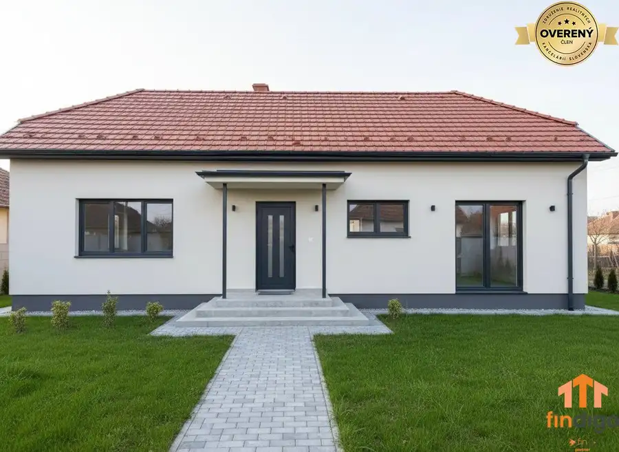
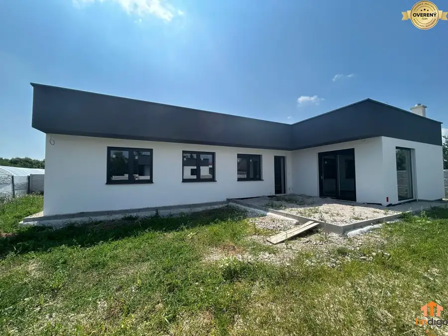

PRENÁJOM - 2-izbový priestranný byt, terasa a parkovanie, Svätoplukovo
Svätoplukovo
- Dispozícia2-izbový
- Plocha73.8 m²
- Poschodie0. z 1
- Stavúplne prerobený
O nehnuteľnosti
Spoločnosť Findigo ponúka na prenájom priestranný, kompletne zrekonštruovaný 2-izbový byt (byt č. 2) v tichej lokalite v obci Svätoplukovo. Byt sa nachádza v zateplenej tehlovej bytovej jednotke so samostatným prístupom cez vlastnú bránu a asfaltovú cestu.
Základné parametre:
Rozloha: 74 m² + veľká pivnica (12 m²)
Stav: Kompletná rekonštrukcia, zateplený objekt
Konštrukcia: Tehla, plastové okná
Umiestnenie: Suterén s denným svetlom
Vlastníctvo: Osobné (so súhlasom majiteľa na podnájom)
Dispozícia a vybavenie:
Interiér: Čiastočne zariadený, pripravený k nasťahovaniu.
Spálňa: Mimoriadne priestranná, vybavená štýlovým LED podsvietením pre príjemnú atmosféru.
Kúpeľňa: Zariadená - disponuje sprchovým kútom aj vaňou, k dispozícii je automatická práčka.
Toaleta: 1x samostatné WC.
Exteriér: K bytu prislúcha terasa na spoločnom nádvorí, ideálna na relax.
Siete: Verejný vodovod, kanalizácia, internetové pripojenie v cene/k dispozícii.
Zvieratá: domáci miláčik vítaný
Parkovanie a prístup:
K bytu prislúchajú 2 vyhradené vonkajšie parkovacie miesta priamo v uzavretom areáli za vlastnou bránou.
Lokalita:
Obec Svätoplukovo ponúka pokojné bývanie s dobrou dostupnosťou do Nitry. Ideálne pre pár alebo jednotlivca, ktorí hľadajú komfort bytu s výhodami súkromného dvora.
Cena: 650€ / mesiac (vrátane energií a internetu)
650€ nájom + 650€ depozit + 650€ sprostredkovateľský poplatok
Dostupnosť: Ihneď
Kontakt:
Email:
Parametre
| Úžitková plocha | 73.8 m² |
|---|---|
| Poschodie | prízemie |
| Počet poschodí | 1 |
| Počet izieb | 2 |
| Stav | úplne prerobený |
| Odvoz odpadu | áno |
| Plyn | nie |
| Internet | lokálny poskytovateľ |
| Kúpeľňa | vaňa a sprchovací kút |
| Vykurovanie | spoločné – vlastná kotolňa |
| Balkón | nie |
| Lódžia | áno |
| Terasa | áno |
| Pivnica | áno |
| Garáž | nie |
| Výťah | nie |
| Parkovanie | vlastné vyhradené |
| Postavené z | tehla |
| Zariadenie | čiastočne |
| Zateplený objekt | áno |
| Krb | nie |
| Klimatizácia | nie |
| Káblová televízia | nie |
| Energetický certifikát | áno |
| Predzáhradka | nie |
| Bezbariérový prístup | nie |
| Okná | plastové |
| Dátum zverejnenia | 29. 6. 2026 |
Kde to je
Mohlo by Vás zaujímať

Rodinné domy10 90 000 €PREDAJ - Rodinný dom vhodný na rekonštrukciu podľa predstáv, Hruboňovo Hruboňovo 4-izbový200 m² Spoločnosť Findigo Vám ponúka na predaj vidiecky rodinný dom v osobnom vlastníctve v obci Hruboňovo, časť Suľany , vo vzdialenosti približne 20 km od…
Rodinné domyNové10 173 000 €PREDAJ - Rodinný dom v obci Žíharec Žihárec 4-izbový90 m² Spoločnosť Findigo Vám predstavuje krásny rodinný dom, ktorý sa nachádza v tichej a príjemnej lokalite obce Žihárec, len 15 km od okresného mesta…